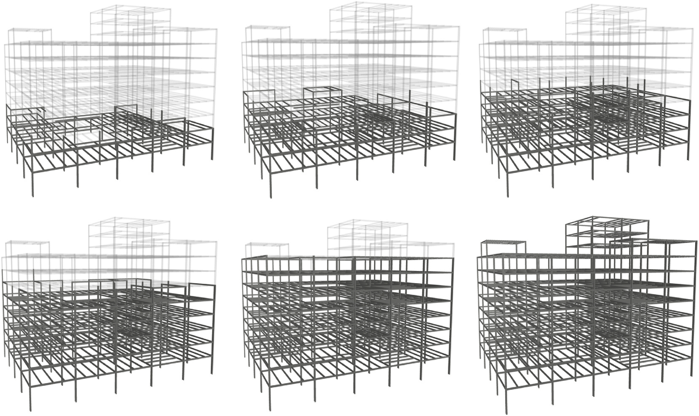
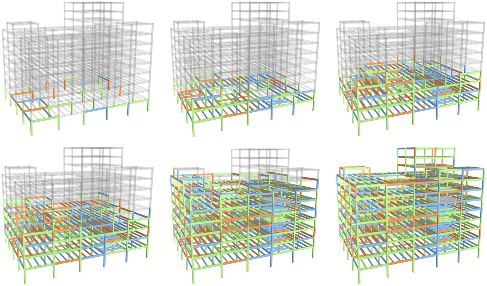

Intelligent construction scheduling for steel-frame structures钢框架结构智能施工调度
BIM-derived component constraints support a connected workflow for steel-frame construction scheduling. The work covers sequential installation with DADGA, resource-constrained trade-offs with MOACS, and dynamic scheduling with a Dueling Double DQN that selects dispatching rules.
BIM 构件约束支持钢框架施工调度的一体化流程。该系列包括 DADGA 串行安装排序、MOACS 资源受限多目标折中，以及通过决斗双深度 Q 网络选择调度规则的动态调度。
Role:个人贡献： The 2024 paper credits Zhaozheng Shen with original-draft writing, software and investigation.2024年论文的 CRediT 记录沈召正承担原创写作、软件与研究调查。
Overview研究概览
Constructability constraints are extracted from the BIM model. On top of them, MOACS schedules three construction teams while balancing duration, cost and carbon, DADGA finds structurally stable installation orders, and deep reinforcement learning is explored for disruptions.
从 BIM 模型自动提取构件之间的可施工性约束。在此基础上，MOACS 安排三个施工班组并权衡工期、成本与碳排放，DADGA 求解结构稳定的安装顺序，并探索用深度强化学习应对施工中的突发事件。
BIM constraint extractionBIM 约束提取
Parse IFC geometry, detect supports by floor and bounding-box contact, and build the constraint matrix MoCC.解析 IFC 几何，按楼层与包围盒碰撞识别支撑关系，生成可施工性约束矩阵 MoCC。
Sequencing · DADGA顺序调度 · DADGA
A dual-adaptive directed GA returns a single-line order that satisfies every constraint.双自适应定向遗传算法，求解满足全部约束的单线安装顺序。
Resources · MOACS资源调度 · MOACS
Three teams with different skills work in parallel; three colonies optimise duration, cost and carbon.三个班组并行、技能各异；三个蚁群分别优化工期、成本、碳排放，输出帕累托解集。
Dynamic · D3QN动态调度 · D3QN
Scheduling under disruptions as an MDP; the agent picks dispatching rules. Under re-evaluation.把突发事件下的调度建模为马尔可夫决策过程，由智能体选择调度规则。正在复核。
Every member knows what must come before it每根构件“先装谁、后装谁”，直接从模型里算出来
Axis-aligned bounding boxes of IFC members are tested pairwise for contact; touching pairs get a direction from stability rules — upper columns depend on lower columns and beams, beams on their columns, secondary beams on main beams. Click any member: its direct predecessors are shown in blue, every member further up the chain in light blue, and the members it supports in teal.
对 IFC 构件求轴对齐包围盒，两两做碰撞检测；接触的构件再按稳定性规则定方向：上层柱受下层柱和梁约束，梁受所连接的柱约束，次梁受主梁约束。点击模型中任意构件：蓝色为直接前置构件，浅蓝为再往前的全部前置构件，青色为它所支撑的后继构件。
Selected member选中构件
Constraint composition约束构成
By type, member ← predecessor按“受约束构件 ← 前置构件”的类型统计
MOACS: three teams, three objectivesMOACS：三个班组，三个目标
Three teams of different skill can install different members in parallel. Higher skill is faster but costs more per hour and emits more — the three objectives conflict. MOACS assigns one ant colony per objective, with a tabu list and a global archive, and returns a set of non-dominated plans for the planner to choose from.
现场有三个技能深度不同的班组，可以并行安装不同构件。技能越高，安装越快，但时薪和单位时间碳排放也越高——三个目标互相冲突。MOACS 用三个蚁群分别负责一个目标，结合禁忌表与全局存档，输出一组互不支配的方案供计划人员选择。
Construction teams (paper Table 3)施工班组（论文表 3）
Case result in the paper论文算例结果
- Runtime计算耗时
- 847.8 s
- Non-dominated非支配解
- 739
- Duration工期范围
- 25.9 – 54.4 h
- Cost成本范围
- 42,518 – 50,652 CNY元
- Carbon碳排放范围
- 139.6 – 146.1 kgCO₂e
- Representative代表方案
- 25.9 h · 44,366 CNY元 · 143.1 kgCO₂e
The shortest-duration plan balances cost and carbon; as duration grows the front stretches toward “low cost, high emission” or the reverse.工期最短的方案在成本与碳排放间较为均衡；工期拉长后，前沿向“低成本、高排放”或相反方向延伸。
Pareto front帕累托前沿
Points come from the 30 saved comparison runs and use the research-code rates (teams 400/280/200 CNY/h, crane 50 CNY/h); the paper’s case result above uses Table 3 rates.散点来自论文对比实验保存的 30 次运行，成本按研究代码中的费率（班组 400/280/200 元/h、塔吊 50 元/h）计算；上方论文算例采用表 3 费率。
Against NSGA-II and MOPSO (30 independent runs each)与 NSGA-II、MOPSO 的对比（各 30 次独立运行）
Each dot is one run; the bar marks the mean.每个点是一次运行；横线为均值。
How three teams install 1,165 members实际工程：三个班组如何协同完成 1,165 根构件
The saved MOACS plan is mapped member by member onto the BIM model. Colour shows which team installs a member; glowing members are being installed right now. Three teams work on different floors at once, and an upper floor starts before the one below is finished — the advantage of member-level over floor-by-floor scheduling.
把 MOACS 保存的方案逐构件导入 BIM：颜色表示由哪个班组安装，发光的是此刻正在安装的构件。可以看到三个班组同时在不同楼层作业，下一层未完全结束时上一层已经开工——这正是构件级调度相对“逐层施工”的优势。
Team load班组负荷
busy hours / makespan忙碌工时 / 总工期
Installing now正在安装
Time window of each floor各楼层施工时间窗
overlapping windows = floors built in parallel相邻楼层时间窗重叠 = 跨层并行施工
Rhythm of the three teams三个班组的协同节奏
members finished per 20 h; the line marks playback time每 20 小时内各班组完成的构件数；竖线为当前播放时刻
Data source and calculation数据来源与计算口径
DADGA: a genetic algorithm that mutates with directionDADGA：让遗传算法“有方向地”变异
DADGA searches for a single installation order that satisfies every BIM constraint.
DADGA 求解满足全部 BIM 约束的单线安装顺序。

On the 1,165-member project, DADGA returns an installation order satisfying all constraints in 834.28 s.在 1,165 构件的实际工程上，DADGA 用 834.28 秒得到满足全部约束的安装顺序。
Letting an agent choose dispatching rules under disruptions动态调度：让智能体在突发事件中选择调度规则
Absent crews, late deliveries and equipment faults are common on site. Thesis chapter 5 models scheduling as a Markov decision process: the state describes members, teams and events; the action picks one heuristic dispatching rule; a Dueling Double DQN with prioritised replay is trained offline and used online.
施工中常出现班组缺勤、构件延迟到场、设备故障等事件。论文第 5 章把调度过程建模为马尔可夫决策过程：状态描述构件、班组与事件，动作是从一组启发式调度规则中选择一条，用 Dueling Double DQN + 优先经验回放离线训练，再用于在线调度。
Status:当前状态： The environment and experiments are being redesigned and re-checked (including putting precedence constraints on the time axis and fixing training details). No performance comparison is shown until the new experiments are complete.该部分的环境与实验正在重新设计与复核（包括把前置约束放入时间维度、修正训练细节），本页暂不展示性能对比结论，待新实验完成后补充。
Figures from the papers论文中的图

Papers and how to read the numbers论文与数据说明
Two kinds of numbers appear on this page. Paper results (DADGA Table 2, MOACS case ranges and representative plan) are quoted from the published papers. Page calculations (constraint statistics, cost and carbon of the 1,165-member case, Pareto points and metric distributions) are reorganised from saved research data with the papers’ formulas; no optimiser was re-run.本页数字分两类：论文结果（DADGA 表 2、MOACS 算例范围、代表方案）直接引自已发表论文；本页计算（约束统计、1165 构件实例的碳排放与成本、帕累托散点和指标分布）由保存的研究数据按论文公式重新整理，未重新运行优化算法。